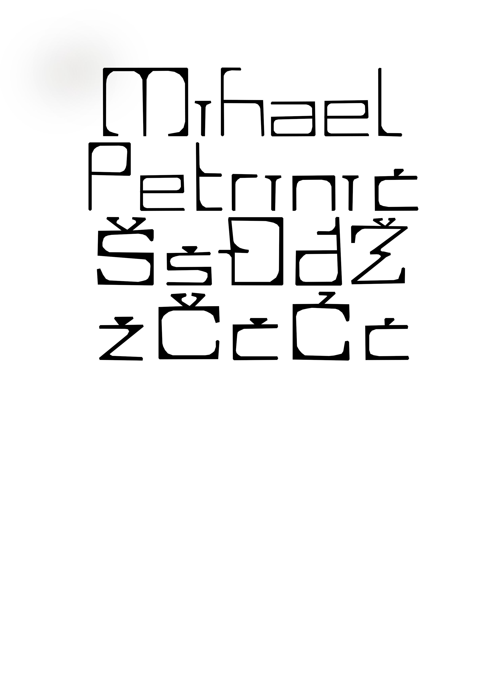
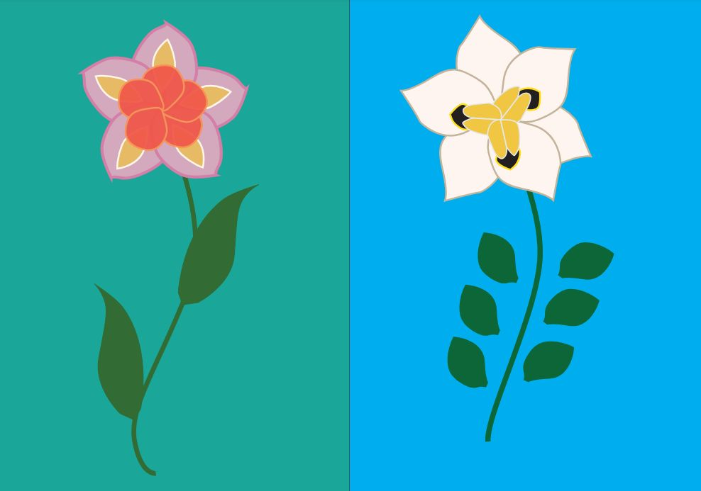
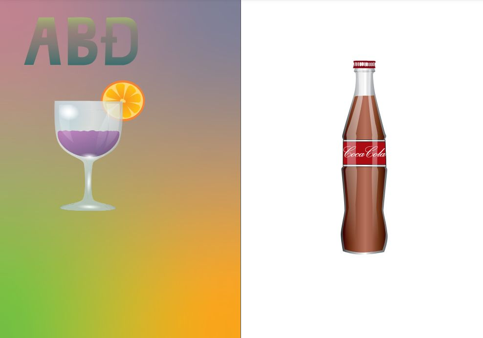
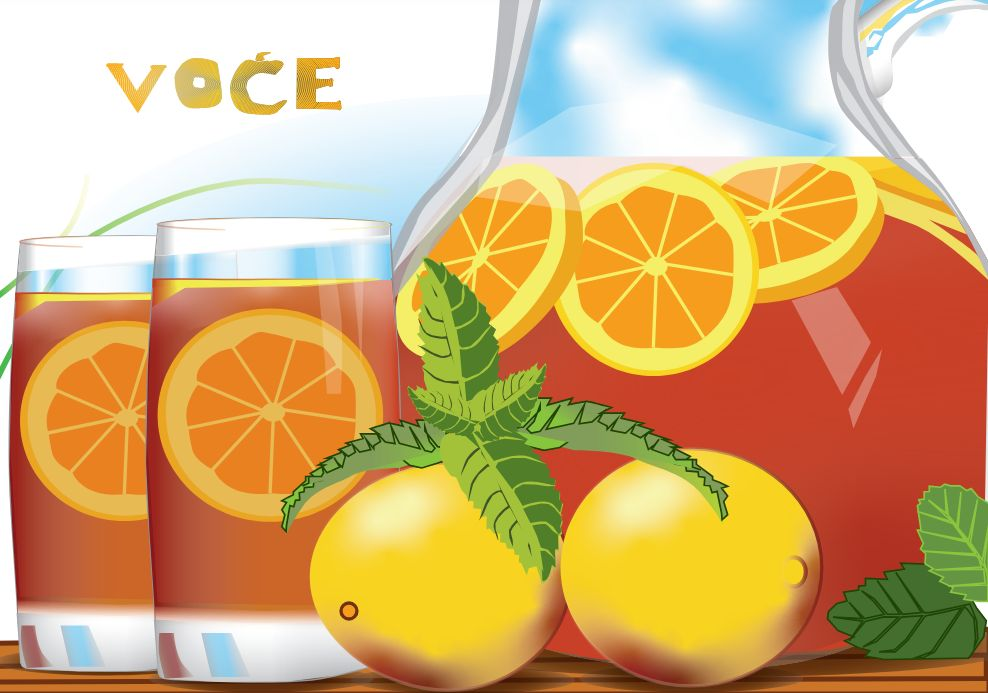
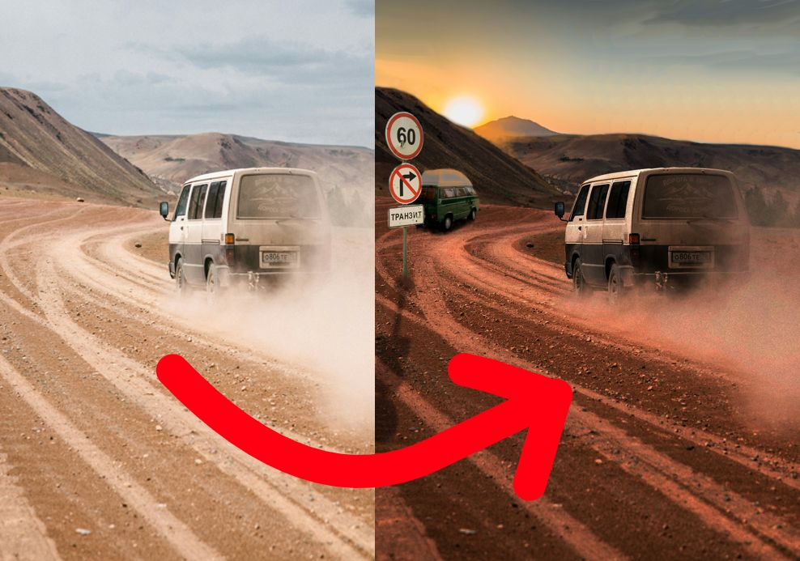
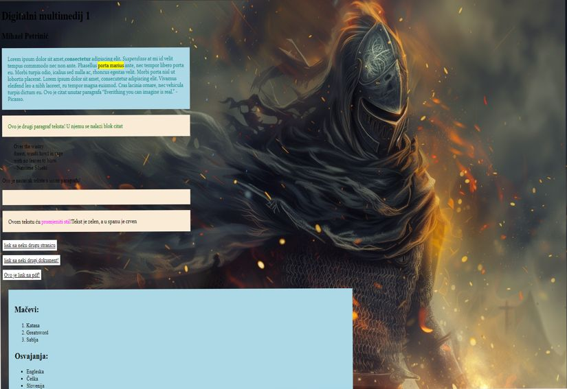

Vježbe
Vježba 1 - 4
Kroz vježbe 1 - 4 učili smo se raditi svoj font te osnove font forge-a a kasnije korištenje programa Adobe Illustrator u kojem smo morali napraviti različite predmete. Za kraj smo napravili i kolokvijski zadatak koji je sadržavao sve do tad naučene tehnike.
   Vježba 5 - 7
Kroz vježbe 5 - 7 učili smo princip rada photoshopa, uređivanja i retuširanja slika te fotomontaža.

Vježba 8 - 9
U vjezbi 8 smo morali napraviti vlastiti gif, a u vjezbi 9 videouradak koji kombinira razlicite efekte.

Vježba 10 - 11
Kroz vježbe 10 i 11 naučili smo se kodirat html i css stranice te postavljanje toga na Github. ove vježbe su najznačajnije za ovaj projektni zadatak
